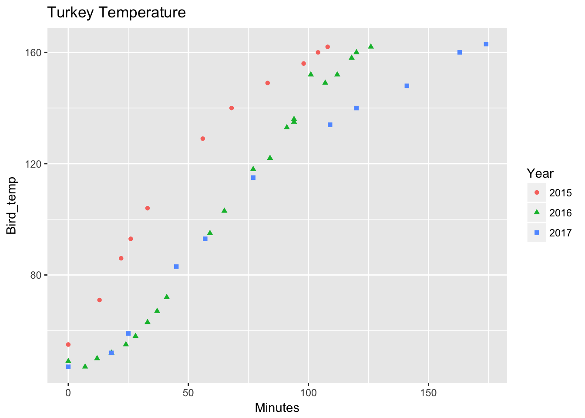

Another Thanksgiving has gone by and another set of turkey roasting data is available.
This year’s turkey was quite a bit bigger than last year’s one (20 vs 14 lbs) because we usually roast one and buy another. The place we buy from wasn’t selling hot turkeys, so we decided to just make one big one. Other than the size, we used the same method as last year (see last year’s post).
library(googlesheets)
library(ggplot2)
suppressPackageStartupMessages(library(dplyr))
turkey_add <- gs_title("Turkey_temp")## Sheet successfully identified: "Turkey_temp"Here’s the data.
turkey <- gs_read(turkey_add)## Accessing worksheet titled '2016'.## Parsed with column specification:
## cols(
## Year = col_integer(),
## Time = col_time(format = ""),
## Minutes = col_integer(),
## Bird_temp = col_integer(),
## Oven_temp = col_integer(),
## Weight = col_integer()
## )turkey## # A tibble: 44 x 6
## Year Time Minutes Bird_temp Oven_temp Weight
## <int> <time> <int> <int> <int> <int>
## 1 2016 01:35:00 0 49 500 14
## 2 2016 01:42:00 7 47 500 14
## 3 2016 01:47:00 12 50 500 14
## 4 2016 01:53:00 18 52 500 14
## 5 2016 01:59:00 24 55 500 14
## 6 2016 02:03:00 28 58 500 14
## 7 2016 02:08:00 33 63 350 14
## 8 2016 02:12:00 37 67 350 14
## 9 2016 02:16:00 41 72 350 14
## 10 2016 02:34:00 59 95 350 14
## # ... with 34 more rowsLast year it seemed like there wasn’t much difference in time using the convection oven. This year I repeated the convection oven but with the bigger bird it took much longer to reach the target temperature of 162 degrees.
turkey$Year <- as.factor(turkey$Year)
ggplot(turkey, aes(x=Minutes, y = Bird_temp, shape = Year,
color = Year)) +
geom_point() +
ggtitle("Turkey Temperature")
The big difference this year was that the dark meat was much drier by the time the breast reached the target temperature. It was almost 190 degrees, meaning it was well done. In previous years the dark meat always has a little pink near the joint. Pink turkey juices are always a little suspect so this was an improvement. The difference is probably the longer roast time (almost an hour longer).
There are a few variables that make comparison sketchy (such as the fact that I used 3 different ovens), but there’s no doubt that it takes longer to cook a big turkey, even with the convection.
Conclusion
Big turkey takes longer. Duh. Most importantly the turkey turned out great! One guest told me several times how much he liked it. He was only 7 years old, but a compliment is always welcome!